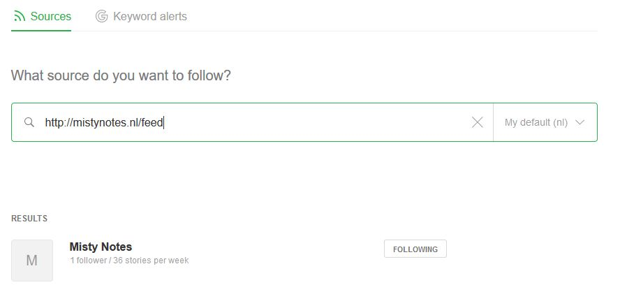

Zelf rss-feeds maken voor interessante sites
Sommige websites zijn zo leuk en interessant, daar zou je iedere dag wel een kijkje willen nemen. Wat zou het fijn zijn als je die in je nieuwsoverzicht van je feedreader kunt stoppen. Weet je al wat feedreaders zijn? Nee? Lees dan even dit korte stukje, dan ben je meteen op de hoogte. Als je wel weet wat een feedreader is, dan ben je vast bekend met hoe ze werken. Met een feedreader (zoals bijvoorbeeld Feedly) kun je makkelijk een heel groepje van kranten bij elkaar zetten, en daarvan de belangrijkste artikelen bekijken. Soms wil je echter bewust uit die "bubble", en kies je voor wat onbekender nieuws. Deze onbekendere sites hebben soms helemaal geen rss feed.
Hoe ga je dan te werk?
Een niche ligt niet in een bubbel

No food
Sommige sites bieden echter geen feed aan. Waarom ze dat niet doen is mij een raadsel. Misschien heeft het iets te maken met copyright. Of misschien is het gewoon te veel moeite, geen idee.
Er is een heel leuke koopjes-site voor boeken: ebookalarm.nl. Iedere dag wordt daar een boek gepresenteerd dat je voor twee of drie euro kunt kopen. Deze zou ik graag in mijn nieuwsoverzicht willen hebben, zodat ik niet iedere dag naar die site hoef te gaan om te kijken wat er voor aanbieding is. Van deze site had ik de feed echter niet kunnen ontdekken. Ik heb zelfs een mailtje gestuurd met de vraag of er een rss beschikbaar is of beschikbaar gesteld kan worden.In ieder geval kreeg ik tot nu toe geen antwoord op mijn vraag. Later kwam ik erachter dat ook ebookalarm.nl gewoon een wordpress-site is. En dan heb je al gauw prijs met, zoals gezegd "/feed" achter de url plakken: http://ebookalarm.nl/feed/. Ja hoor! Bingo.
Hungry
Toch wilde ik graag wat meer informatie in die feed. Nu staat er alleen de auteur en de titel in de feed. Ik wilde er wat meer informatie over het boek ernaast hebben staan. Dus heb ik gezocht naar mogelijkheden om van een willekeurige website een eigengemaakte rss-feed te maken. En ook daar schijnen zich mensen op gestort te hebben. Er is een mooie site "Feedity", waarmee je dat kunt doen. Het is mij op Feedity niet gelukt om van ebookalarm een goede rss-feed te maken. Ik stuurde een vraag en kreeg ik het volgende antwoord:
A feed can be created for ebookalarm.nl, with the ebook title, link, image and summary (author, price, code), using our Advanced Refinement feature. To be able to extract the image and summary, you'll need a Plus plan or higher. You can compare our plans and pricing at https://feedity.com/plans.aspx. Higher plans offer quicker updates, more feeds to build, and other exclusive features like extraction of summaries, images, dates etc. All paid plans come with a money-back guarantee. Let us know if you have any questions or if you need any help getting started.
Een erg aardig mail, maar ik ga echt niet iets kopen, wat ik niet werkend heb gezien.
Dus nog even verder gezocht, en gevonden!
The hunt for food
Feed43 is een beetje een lelijke site. Maar toch lukte het me om daar een feed te maken.
Kijk even mee, hoe dat gaat.
Het hele proces bestaat uit vier stappen. Eerst geef je de plaats van de site aan, daarna kun je bepalen welke stukjes van die site je belangrijk vindt om in je nieuwsoverzicht te hebben. Vervolgens kun je bepalen hoe jouw nieuwsoverzicht er uitziet met deze opgehaalde stukjes van de nieuwssite. En in de laatste stap kun je de locatie van je rss feed kopiëren, om dit in je nieuwsoverzicht te zetten.
Logisch, hè? (Zei een mevrouw in de spiegel met een tampon in haar hand, maar dat is voor de wat oudere lezers.)
Tja, het is een beetje hacken. Maar het is ook weer niet zo heel moeilijk. Probeer het ook eens samen met mij:
Dus:
Stap 1
Step 1. Specify source page address (URL) http://ebookalarm.nl/ UTF-8
Dat was niet zo moeilijk. Die encoding kun je ook leeglaten, dus niet invullen, als je het niet zeker weet. Als dit niet goed is ingesteld, dan kun je hooguit rare tekens verwachten bij letters met een trema of umlaut. Tenminste, als je geen Japans of Chinees krantje hebt opgegeven. E-book alarm is gewoon Nederlands en is met de letters van UTF-8 samengesteld, zo vond ik in de broncode van de site: ga naar de site, druk op rechtermuisknop, en klik op "broncode bekijken". Dan zie je daar bovenaan al UTF-8 staan.
Als je op de knop "reload" in het formulier drukt dan vult het tweede tekstveld zich met de broncode van de site ebookalarm.nl.
Stap2
Step 2. Define extraction rules
{%}
<h1>{%}</h1><h2>{%}</h2>{*}price">{%}{*}<blockquote>{%}</blockquote>Ja, dit is het leuke deel. Omdat ebookalarm niet zo groot is, vul ik voor de eerste globale filter maar "alles" in. Dus die {%} betekent: "alles meenemen, de hele site en niet maar een gedeelte.".
Daarna ga je de informatie eruithalen die jij in het nieuwsoverzicht wil terug zien. Vind je de prijs belangrijk? Vind je de kortingscode ook belangrijk, de titel de auteur? Dit is met enig puzzelen uit de site te filteren met de html-tags bijvoorbeeld "<h1>" of "</h1>
<blockquote>". Het zoekpatroon wat hier staat zegt het volgende:
Zoek <h1>. Onthoud wat daarna voor tekst komt tot aan</h1><h2> en zet dat in nummer 1. Onthoud vervolgens wat na die</h2><h2> komt tot aan</h2>. Dat is dan nummer 2. Negeer daarna gewoon alle rommel die je tegenkomt totdat je price"> tegenkomt en onthoud dan alles wat daarna komt, totdat je ziet (dat is nummertje 3). Daarna mag je alles weer overslaan totdat je <blockquote> tegenkomt. Onthoud dan alles tot aan</blockquote>. Zet dat dan maar in het volgende nummer: 4. Zo hebben we vier waarden die we kunnen gebruiken in onze newsfeed. Mooi hè?
Stap 3
Step 3. Define output format
RSS feed properties, dit zijn de titel, de link naar de site en een beschrijving:
Ebookalarm
http://ebookalarm.nl/
Ebookalarm Bestsellers 24 uur in actie
RSS item properties, dit zijn de titel van het nieuwsitem, dat je met de stukjes informatie kunt maken die je uit stap 2 heb gehaald.
ebookalarm: {%1} {%2} {%3} {%4}
De link naar de site:
http://ebookalarm.nl/
En de inhoud van je nieuws:
<h1>{%1} van {%2}</h1> Met kortingscode {%4} voor {%3} bij Kobo
Informatie over deze titel:
<a href="https://www.google.com/search?q={%1}">Google</a>
<a href="http://www.tzum.info/zoeken/?zoom_query={%1} {%2}">Tzum</a>
<a href="https://www.goodreads.com/search?q={%1} {%2}">Goodreads</a>
Kopen:
<a href="http://ebookalarm.nl">ebookalarm.nl</a>
<a href="https://store.kobobooks.com/p/ebookalarm?utm_source=ebookalarmnl&utm_campaign=promo&utm_medium=site">Kobo</a>Je kunt hier met die vier waarden van alles maken. Zoals je ziet heb ik deze waarden, de auteur %2, de titel %1, de kortingscode &4 en de prijs %3 gebruikt in de titel.
Maar ik vond het ook wel gemakkelijk om om de inhoud (content) meteen een zoeklink naar google of naar andere sites te maken. Dan kun je meteen kijken of het boek je bevalt. En dat staat natuurlijk niet op ebookalarm.nl .
In deze output zie je veel html-codes. "<h1>" Bijvoorbeeld. Dat betekent "eerste header" dus de belangrijkste kopregel van het artikel. H2 is dan een tussenkop of een onderkop.
Als je nog niet veel weet van html, kijk dan gewoon even op http://www.w3schools.com. Dat is een erg leuke studiesite. Je hoeft het niet allemaal meteen te snappen, je kunt deze code kopiëren op je formulierpagina van feed43. En probeer het dan eens uit.
Bon appetit
Stap 4
In stap 4 kun je de link naar de feed kopiëren en in je feedreader bekendmaken als een nieuwsbron die je wil lezen.
De naam van de xml heb ik veranderd van 6081866285etc in Ebookalarm. Maar maak er zelf een, het is zo gedaan. Kopieer en plak de zaakjes hierboven in een nieuw feed43 formulier en je kunt het zelf gebruiken. Maak zeker een account als je hier tevreden over bent. Feed43 zorgt ervoor dat je steeds nieuwe informatie in je nieuwsapplicatie krijgt. Als je wil dat dat sneller gebeurt, of als je zo enthousiast bezig bent dat je meer feeds hebt gemaakt, dan het gratis account toestaat, dan kun je een betaald account nemen.
Veel succes!